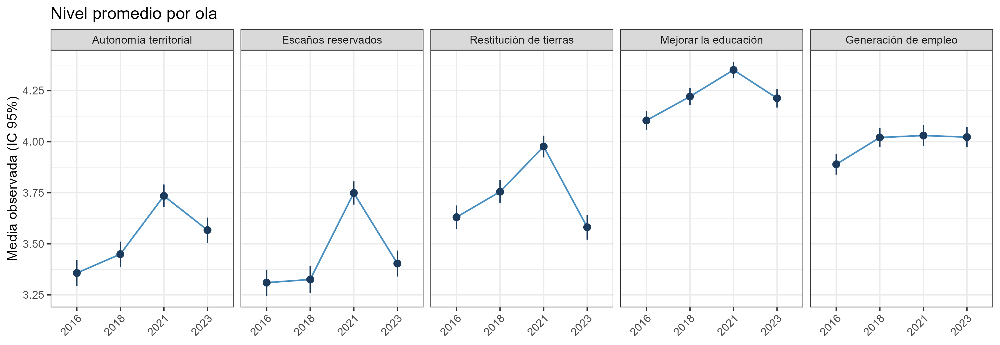

| Autonomía | Escaños | Restitución | Educación | Empleo | |
|---|---|---|---|---|---|
| β 2016-18 | 0.81 (0.13) | 0.92 (0.13) | 0.76 (0.09) | 0.30 (0.13) | 0.72 (0.12) |
| β 2018-21 | 0.47 (0.09) | 0.43 (0.06) | 0.78 (0.09) | 0.26 (0.13) | 0.71 (0.18) |
| β 2021-23 | 0.85 (0.18) | 0.86 (0.14) | 0.85 (0.09) | 0.92 (0.77) | 0.34 (0.11) |
| r 2016-18 | 0.88 | 0.85 | 0.84 | 0.42 | 1.00 |
| r 2018-21 | 0.61 | 0.67 | 0.84 | 0.39 | 0.48 |
| r 2021-23 | 0.60 | 0.58 | 0.62 | 0.44 | 0.36 |
Del estallido al Rechazo: cambio y estabilidad de valoraciones hacia políticas indígenas en Chile, 2016–2023
Proyecto para Sociología del Estado de Bienestar (SOL3043)
ignacio.zavala@uc.cl · GitHub
Ignacio Zavala Aránguiz
Contexto: el conflicto indígena llega a la agenda pública
- El conflicto entre el Estado y los pueblos indígenas, en particular el mapuche, por territorio y autonomía es una de las tensiones más persistentes de la democracia post-transición (Bauer, 2016; Pairican & Urrutia, 2021).
- Chile vivió procesos que pusieron parte de ese conflicto en la agenda pública: estallido de 2019, Convención con escaños reservados y Rechazo de 2022 (Disi Pavlic, 2024; Piscopo & Siavelis, 2021; Somma et al., 2021; Turra Chico et al., 2026).
- Las explicaciones suelen anclarse en actores institucionales y soberanía estatal, pero rara vez incorporan la importancia que la ciudadanía atribuye a estos temas en el tiempo.
Tres fases del período
2016 – 2018
pre-estallido
\(\Downarrow\)
2018 – 2021
estallido y proceso constituyente
\(\Downarrow\)
2021 – 2023
post-Rechazo
Brecha, contribución y pregunta de investigación
- Las actitudes hacia grupos minoritarios se han estudiado sobre todo desde raza e inmigración (Achard et al., 2025; Kustov et al., 2021). Sobre políticas indígenas hay poca evidencia, casi siempre transversal (Bartram & Jarochova, 2022; Bergmann, 2024; Fuentes et al., 2025).
- La sostenibilidad de una política depende de que el tema mantenga centralidad más allá de su pico mediático. En las políticas indígenas es crítico: arrastran conflictos históricos y apuntan a poblaciones susceptibles de reparación histórica (Kymlicka, 2003).
- Contribución: distinguir cambio persistente de transitorio en la importancia atribuida a políticas indígenas, controlando por error de medición.
- Pregunta de investigación:
¿En qué medida las valoraciones de distintas políticas indígenas muestran patrones de cambio persistente o estabilidad durante 2016-2023 en Chile, y cómo varía este patrón según el tipo de política evaluada?
Literatura: SDM, AUM y el rol del QSM
- SDM (disposiciones estables): hay una creencia basal y las fluctuaciones entre olas son transitorias o error de medición. AUM (actualización activa): las personas revisan sus creencias y ese cambio se propaga a las mediciones siguientes (Kiley & Vaisey, 2020; Vaisey & Kiley, 2021).
- En actitudes raciales y de límite grupal predomina la estabilidad una vez controlado el error (Kustov et al., 2021). El cambio persistente es más probable en temas de alta saliencia (Kiley & Vaisey, 2020; Prior, 2010; Sears, 1983).
- Quasi-Simplex (QSM): separa el true score del error de medición con al menos tres olas y entrega la estabilidad entre olas libre de error (Achen, 1975; Prior, 2010; Wiley & Wiley, 1970).
El caso chileno: exposición diferenciada de las políticas
- Conflicto extenso y de larga data en la macrozona sur (Montenegro, 2024; Pairican & Urrutia, 2021), con una exposición inédita en el estallido y la Convención (Piscopo & Siavelis, 2021; Somma et al., 2021).
- Autonomía, restitución de tierras y escaños reservados pasaron a la agenda constitucional (Bauer, 2018; Disi Pavlic, 2024; Herraz et al., 2026; Turra Chico et al., 2026). Educación y empleo siguieron como política social secundaria y transversal (Somma et al., 2021; Suárez Delucchi & Rivera Ugarte, 2024).
Objetivo
Evaluar qué modelo explica mejor el cambio en la importancia atribuida a estas políticas (SDM, AUM o QSM) y en cuáles se plasma con más claridad, distinguiendo las de mayor saliencia.
Pregunta y datos
- Pregunta: ¿En qué medida las valoraciones de distintas políticas indígenas muestran patrones de cambio persistente o estabilidad durante 2016-2023 en Chile, y cómo varía este patrón según el tipo de política evaluada?
- ELRI (CIIR): panel de población indígena y no indígena en tres macrozonas (Norte, Centro, Sur), con sobrerrepresentación indígena y muestras espejo.
- Entrevistados por ola: 3.613 (2016), 2.879 (2018), 1.847 (2021) y 1.680 (2023). La mayor pérdida ocurre entre 2018 y 2021, por el paso a modalidad telefónica durante el COVID-19.
- Muestra analítica: panel balanceado, \(N = 1{,}589\). Hay atrición diferencial por etnia, sexo y edad, y no se usan ponderadores longitudinales.
Variable dependiente: enunciado e ítems
«Existe una serie de políticas que se han discutido para abordar el tema indígena. Según usted, ¿cuán importante es…?»
Escala de 5 puntos: 1 = Muy poco, 5 = Mucho.
| Tipo | Ítem (redacción exacta) |
|---|---|
| Convención | «Que puedan administrar autónomamente sus territorios» |
| Convención | «Establecer asientos especiales en el congreso» |
| Convención | «Restituirles o devolverles sus tierras» |
| Socioeconómica | «Mejorar su educación» |
| Socioeconómica | «Políticas de generación de empleo» |
Estrategia (I): SDM y AUM
- SDM: una disposición individual fija \(U_i\) alimenta todas las olas; el resto es transitorio.
\[U_i \;\xrightarrow{\;\;1\;\;}\; \underbrace{y_{i1},\; y_{i2},\; y_{i3},\; y_{i4}}_{y_{it}\,=\,\alpha_t\,+\,U_i\,+\,\varepsilon_{it}}\]
- AUM: el valor de una ola se propaga a la siguiente con persistencia \(\rho\).
\[y_{i1} \xrightarrow{\;\;\rho_1\;\;} y_{i2} \xrightarrow{\;\;\rho_2\;\;} y_{i3} \xrightarrow{\;\;\rho_3\;\;} y_{i4} \qquad y_{it}=\alpha_t+\rho_{t-1}\,y_{i,t-1}+\varepsilon_{it}\]
| Modelo | \(U_i\) | \(\rho\) | Intercepto \(\alpha_t\) |
|---|---|---|---|
| SDM libre | varianza libre | \(\rho = 0\) | libre por ola |
| SDM puro | varianza libre | \(\rho = 0\) | constante |
| AUM constante | \(U_i = 0\) | fijo entre olas | constante |
| AUM libre | \(U_i = 0\) | libre por ola | libre por ola |
Estrategia (II): QSM y criterios de ajuste
- QSM: el true score \(\eta_t\) se encadena entre olas y cada medición \(y_t\) agrega error.
\[\begin{array}{ccccccc} \eta_1 & \xrightarrow{\;\beta_{21}\;} & \eta_2 & \xrightarrow{\;\beta_{32}\;} & \eta_3 & \xrightarrow{\;\beta_{43}\;} & \eta_4 \\[2pt] \downarrow & & \downarrow & & \downarrow & & \downarrow \\[2pt] y_1 & & y_2 & & y_3 & & y_4 \end{array}\]
\[y_t = \eta_t + \varepsilon_t \qquad\quad \eta_t = \alpha_t + \beta_{t,t-1}\,\eta_{t-1} + \zeta_t\]
- \(\beta_{t,t-1}\): estabilidad libre de error de medición entre olas consecutivas; varianza del error igual en las cuatro olas (Prior, 2010; Wiley & Wiley, 1970). Si una varianza de \(\eta\) resulta negativa (Heywood), se fija en 0.
- Ajuste: BIC (criterio principal), CFI, RMSEA (Kline, 2023). Estimación con
lavaan(MLR, FIML).
Descriptivo: nivel promedio por ola

- Cuatro de los cinco ítems tienen su punto más alto en 2021; empleo casi no se mueve. Este descriptivo no separa cambio real de error de medición.
¿Qué modelo se ajusta mejor? SDM vs. AUM
| Ítem | Mejor modelo | BIC | ΔBIC vs. 2.º | CFI | RMSEA | SRMR |
|---|---|---|---|---|---|---|
| Autonomía | SDM libre | 19589 | 23 | .87 | .058 | .037 |
| Escaños | SDM libre | 20004 | 22 | .88 | .066 | .042 |
| Restitución | SDM libre | 18931 | 101 | .99 | .027 | .022 |
| Educación | SDM libre | 15939 | 13 | .91 | .020 | .018 |
| Empleo | AUM constante | 17650 | 17 | .80 | .037 | .033 |
- SDM ajusta de manera superior en cuatro ítems y AUM constante en empleo.
- AUM no prevalece en ninguna política de alta saliencia de la Convención.
BIC de los cinco modelos por ítem
| Ítem | SDM libre | SDM puro | AUM constante | AUM libre | QSM |
|---|---|---|---|---|---|
| Autonomía | 19589 | 19670 | 19641 | 19612 | 19590 |
| Escaños | 20004 | 20148 | 20152 | 20026 | 19989 |
| Restitución | 18931 | 19055 | 19126 | 19032 | 18948 |
| Educación | 15939 | 15988 | 15953 | 15952 | 15956 |
| Empleo | 17667 | 17667 | 17650 | 17674 | 17658 |
- En negrita, el menor BIC de cada ítem. Autonomía queda en empate entre SDM libre y QSM.
- El QSM queda cerca en todos los ítems pese a su capacidad de controlar por error de medición. Su aporte concreto está es medir cuánto persiste cada transición.
QSM: estabilidad entre olas
β (error estándar): estabilidad del QSM; r: correlación entre true scores. Empleo: varianza de 2018 fijada en 0 (r = 1,00 es valor de frontera).
- Las correlaciones más altas (.58 a .88) son las de las tres políticas de la Convención; educación y empleo quedan bajo .50.
QSM: criterios de ajuste
| Autonomía | Escaños | Restitución | Educación | Empleo | |
|---|---|---|---|---|---|
| χ² | 10.80 | 2.00 | 4.90 | 5.20 | 0.70 |
| gl | 2 | 2 | 2 | 2 | 3 |
| p | 0.005 | 0.370 | 0.085 | 0.075 | 0.880 |
| CFI | 0.96 | 1.00 | 0.99 | 0.97 | 1.00 |
| RMSEA | 0.050 | 0.000 | 0.032 | 0.019 | 0.000 |
| BIC | 19590 | 19989 | 18948 | 15956 | 17658 |
| N | 1589 | 1589 | 1589 | 1589 | 1589 |
- Ajuste del QSM con varianza de error igual entre olas (df = 2; empleo, df = 3 tras fijar la varianza de 2018 en 0).
QSM: interceptos libres y nivel del true score por ola
| Ítem | 2016 | 2018 | 2021 | 2023 | 2021-2018 | 2023-2021 | 2023-2018 |
|---|---|---|---|---|---|---|---|
| Autonomía | 3.35 | 3.45 | 3.73 | 3.56 | +.29 | −.17 | +.12 |
| Escaños | 3.31 | 3.32 | 3.75 | 3.40 | +.43 | −.34 | +.08 |
| Restitución | 3.62 | 3.75 | 3.97 | 3.58 | +.23 | −.39 | −.17 |
| Educación | 4.10 | 4.22 | 4.35 | 4.21 | +.13 | −.14 | −.01 |
| Empleo | 3.89 | 4.02 | 4.03 | 4.02 | +.01 | −.01 | .00 |
- Liberar el intercepto por ola capta shocks agregados que mueven a todos por igual sin cambiar la disposición individual. Ganancia de BIC de SDM libre sobre SDM puro: 81 (autonomía), 144 (escaños), 124 (restitución), 49 (educación) y 0 (empleo).
- El nivel sube en 2021 y vuelve hacia 2018 en 2023: autonomía queda algo más arriba y restitución más abajo. Empleo no muestra pico.
- Resultado central: predominan las disposiciones estables (SDM libre) con desplazamientos transitoriosl; la estabilidad cae en 2018-21 en autonomía y escaños, se mantiene en restitución, y ninguna política de la Convención se recupera en 2021-23.
Conclusiones e interpretación
- Respuesta a la pregunta: el cambio fue transitorio, no persistente. Predomina la estabilidad de creencias; el AUM, que habría mostrado importancia latente persistente, no aparece en las políticas de la Convención.
- Convención: 2018-2021 fue de establecimiento de la saliencia. Tras el Rechazo, decidido por el abordaje concreto de la Convención y su capacidad de generar una propuesta, los temas perdieron centralidad (restitución termina bajo su nivel de 2018) (Prior, 2010; Sears, 1983). La estabilidad podría reflejar incluso a personas descontentas con el proceso (Herraz et al., 2026; Turra Chico et al., 2026).
- Socioeconómicas: educación y empleo no muestran esa saliencia ni variabilidad. Parten de niveles altos (≈ 4,0 a 4,3 de 5), con poca dispersión entre personas y sin pico claro en 2021 (empleo es plano). No entraron al debate institucional (Suárez Delucchi & Rivera Ugarte, 2024), así que no hubo activación que luego se disolviera. Que AUM gane en empleo es evidencia débil: la ventaja de BIC es pequeña (8 frente al QSM) y el ajuste absoluto es bajo (CFI = .80).
Límites
- Un indicador por ola: la identificación exige error igual entre olas, y no se puede estimar validity.
- Empleo con Heywood y educación con poca varianza verdadera. El QSM supone que 2023 depende solo de 2021.
- Panel balanceado con atrición diferencial y sin ponderadores; no se atribuye causalidad a un evento.
- Me habría gustado distinguir entre población indígena y no indígena, pero el poder estadístico de las submuestras dificulta identificar efectos de forma apropiada.
¡Muchas gracias!
Preguntas y comentarios bienvenidos.
Referencias
Achard, P., Albrecht, S., Ghidoni, R., Cettolin, E., & Suetens, S. (2025). Local exposure to refugees changed attitudes to ethnic minorities in the Netherlands. The Economic Journal, 135(667), 808–837. https://doi.org/10.1093/ej/ueae080
Achen, C. H. (1975). Mass Political Attitudes and the Survey Response. American Political Science Review, 69(4), 1218–1231. https://doi.org/10.2307/1955282
Bartram, D., & Jarochova, E. (2022). A longitudinal investigation of integration/multiculturalism policies and attitudes towards immigrants in European countries. Journal of Ethnic and Migration Studies, 48(1), 153–172. https://doi.org/10.1080/1369183X.2021.1922273
Bauer, K. (2016). Land versus Territory: Evaluating Indigenous Land Policy for the Mapuche in Chile. Journal of Agrarian Change, 16(4), 627–645. https://doi.org/10.1111/joac.12103
Bauer, K. (2018). Not-so-neoliberal governance: Chile’s response to Mapuche territorial demands. Latin American and Caribbean Ethnic Studies, 13(3), 214–236. https://doi.org/10.1080/17442222.2018.1457007
Bergmann, F. (2024). Divided Attitudes Toward Rectifying Injustice: How Preferences for Indigenous Policies Differ Between the Indigenous and Majority Populations of Norway and Sweden. The Journal of Race, Ethnicity, and Politics, 9(1), 1–25. https://doi.org/10.1017/rep.2023.38
Disi Pavlic, R. (2024). Indigenous Voices and Votes: Assessing the Dynamics of Indigenous Politics in Chile’s Constitutional Referendum of 2022. PS: Political Science & Politics, 57(2), 267–273. https://doi.org/10.1017/S1049096523000872
Fuentes, C., De Cea, M., & Miranda, C. (2025). A divided society: Social perceptions about indigenous peoples’ rights in Chile. Canadian Journal of Latin American and Caribbean Studies / Revue Canadienne Des Études Latino-Américaines Et Caraïbes, 50(1), 23–42. https://doi.org/10.1080/08263663.2024.2421120
Herraz, P., Murray, M., Luna, L., Piña, G., & Villazón, N. (2026). Plurinationality as an empty signifier in the Chilean constitutional convention of 2021–2022: Recognition of difference and construction of the common. Latin American and Caribbean Ethnic Studies, 1–22. https://doi.org/10.1080/17442222.2026.2656088
Kiley, K., & Vaisey, S. (2020). Measuring Stability and Change in Personal Culture Using Panel Data. American Sociological Review, 85(3), 477–506. https://doi.org/10.1177/0003122420921538
Kline, R. B. (2023). Principles and Practice of Structural Equation Modeling. Guilford Publications.
Kustov, A., Laaker, D., & Reller, C. (2021). The Stability of Immigration Attitudes: Evidence and Implications. The Journal of Politics, 83(4), 1478–1494. https://doi.org/10.1086/715061
Kymlicka, W. (2003). Multicultural citizenship: A liberal theory of minority rights (Repr. in paperback). Clarendon Press [u.a.].
Montenegro, M. (2024). Documenting Territorialidad: An intercultural approach to the provenance of Mapuche land records. Archival Science, 24(4), 923–945. https://doi.org/10.1007/s10502-024-09466-6
Pairican, F., & Urrutia, M. J. (2021). The permanent rebellion: An interpretation of Mapuche uprisings under Chilean colonialism. Radical Americas, 6(1). https://doi.org/10.14324/111.444.ra.2021.v6.1.012
Piscopo, J. M., & Siavelis, P. M. (2021). Chile’s Constitutional Moment. Current History, 120(823), 43–49. https://doi.org/10.1525/curh.2021.120.823.43
Prior, M. (2010). You’ve Either Got It or You Don’t? The Stability of Political Interest over the Life Cycle. The Journal of Politics, 72(3), 747–766. https://doi.org/10.1017/S0022381610000149
Sears, D. O. (1983). The persistence of early political predispositions: The roles of attitude object and life stage. In L. Wheeler & P. Shaver (Eds.), Review of personality and social psychology (Vol. 4, pp. 79–116). Sage.
Somma, N. M., Bargsted, M., Disi Pavlic, R., & Medel, R. M. (2021). No water in the oasis: The Chilean Spring of 2019–2020. Social Movement Studies, 20(4), 495–502. https://doi.org/10.1080/14742837.2020.1727737
Suárez Delucchi, A., & Rivera Ugarte, V. (2024). The Chilean Constitutional Process Narrated Through a Spiral. Studies in Social Justice, 18(4), 969–991. https://doi.org/10.26522/ssj.v18i4.4367
Turra Chico, H., Alonso-Yanez, G., Rice, R., & Caurapán Puelpán, E. (2026). Invited but Ignored: The Political Participation of Indigenous People in Chile’s Constitutional Process. Latin American Perspectives, 53(3), 222–244. https://doi.org/10.1177/0094582X261452610
Vaisey, S., & Kiley, K. (2021). A Model-Based Method for Detecting Persistent Cultural Change Using Panel Data. Sociological Science, 8, 83–95. https://doi.org/10.15195/v8.a5
Wiley, D. E., & Wiley, J. A. (1970). The Estimation of Measurement Error in Panel Data. American Sociological Review, 35(1), 112. https://doi.org/10.2307/2093858